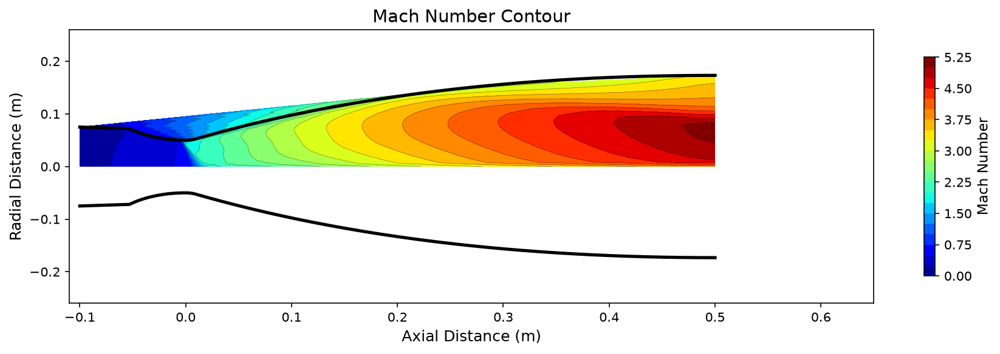
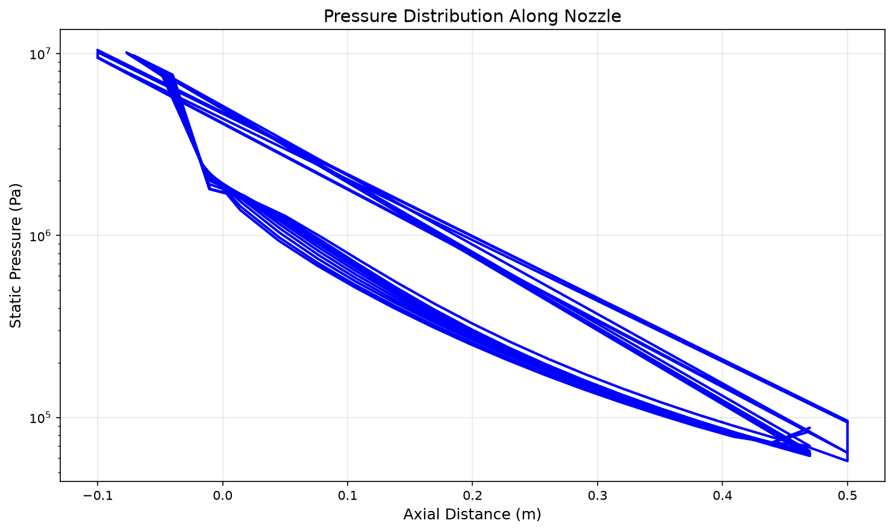
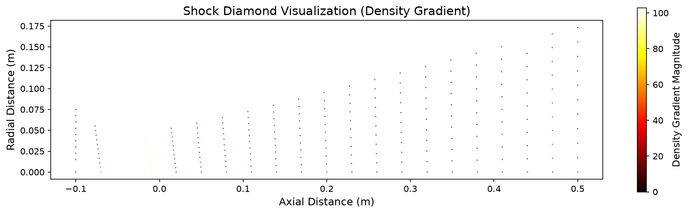

Results
Reference case analysis and parametric sweep results for the converging-diverging rocket nozzle.
Reference Case
Mach Number Contour
The Mach number distribution shows the flow accelerating from subsonic at the inlet through the sonic throat (M=1) to supersonic in the diverging section. Shock diamonds are visible in the exhaust plume.

Convergence History
RMS density residual drops approximately 4 orders of magnitude, confirming steady-state convergence of the Euler simulation.

Wall Pressure Distribution
Static pressure along the nozzle wall decreases monotonically from chamber pressure (10 MPa) to near-vacuum conditions at the exit.

Shock Diamond Structure
Density gradient magnitude reveals the shock diamond pattern in the exhaust plume, characteristic of over-expanded nozzle flow.

Parametric Sweeps
Exit Mach vs Expansion Ratio
Sweeping expansion ratio from 4 to 20 while holding chamber pressure at 10 MPa and throat radius at 5 cm. Exit Mach increases with expansion ratio following the isentropic area-Mach relation.

Exit Mach vs Chamber Pressure
Sweeping chamber pressure from 5 to 50 MPa. For calorically perfect gas (constant gamma), exit Mach is independent of chamber pressure. The SU2 results confirm this theoretical prediction.

Exit Mach vs Throat Radius
Sweeping throat radius from 1 cm to 10 cm. Exit Mach is independent of absolute scale for geometrically similar nozzles. The SU2 results confirm scale invariance.